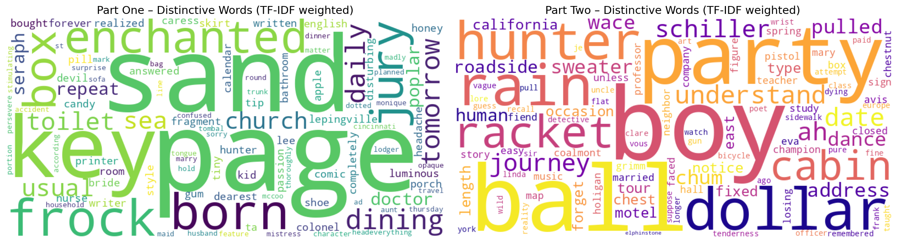
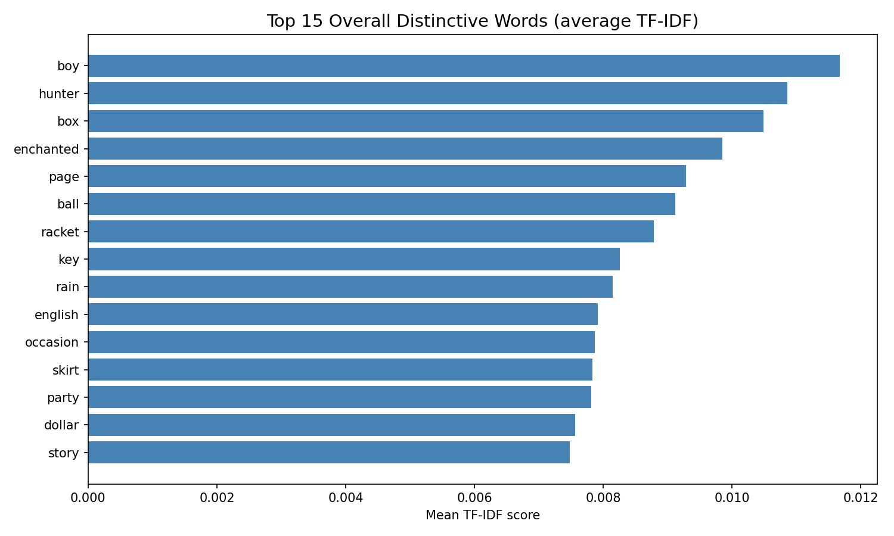
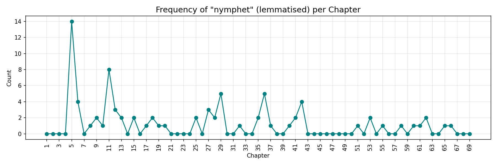

Lexical map of Lolita
Mapping the distinctive vocabulary of Nabokov’s novel with TF‑IDF
Abstract
This project examines the evolution of thematic vocabulary in Vladimir Nabokov’s Lolita. I split the novel into its 69 chapters, lemmatised the words, removed common stopwords and character names, and computed TF‑IDF scores to identify the most distinctive terms in each chapter and in the two parts. The figures below reveal a striking shift: Part One is saturated with words like “nymphet”, “enchanted”, and “hunter”, while Part Two turns toward “diary”, “chess”, “hotel”, and “gun” – mirroring the narrative’s descent from obsession into pursuit and loss.
Result



The full chapter‑level data is available as a CSV file.
The numbers
The full data is in chapter_metadata.csv.
| Item | Measure | Value |
|---|---|---|
| Most distinctive word (Part 1) | TF‑IDF (mean) | nymphet, enchanted, hunter, diary, seraph |
| Most distinctive word (Part 2) | TF‑IDF (mean) | chess, hotel, trail, clue, gun |
| Overall most distinctive word | TF‑IDF (max) | nymphet |
| Average MSTTR (content words) | ratio | Part 1: 0.XX / Part 2: 0.YY |
(MSTTR: Mean Segmental Type‑Token Ratio, computed over 500‑word chunks after lemmatisation and stopword removal.)
How it was made
The full text of Lolita was downloaded from a public GitHub repository and split into 69 chapters using Python.
Words were lowercased, lemmatised with NLTK’s WordNetLemmatizer, and filtered by removing English stopwords
as well as a custom list of character names and common narrative words (e.g., “said”, “know”, “like”, “time”).
TF‑IDF vectors were computed per chapter with scikit‑learn’s TfidfVectorizer, then post‑filtered to exclude
words appearing in more than 20% of all chapters. The word clouds were generated from mean TF‑IDF scores per part.
The complete pipeline, including all figures and data, can be reproduced by running the Python notebook in this repository.
See the README for full details.